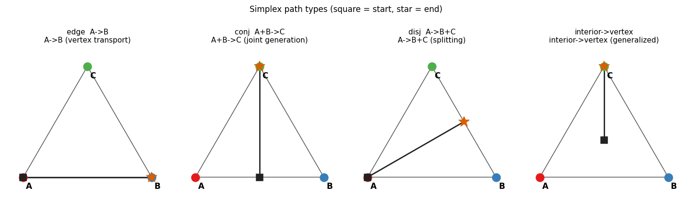
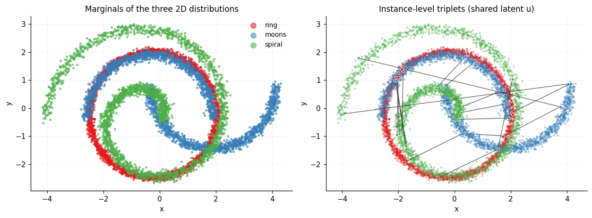
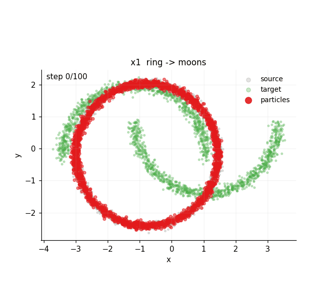
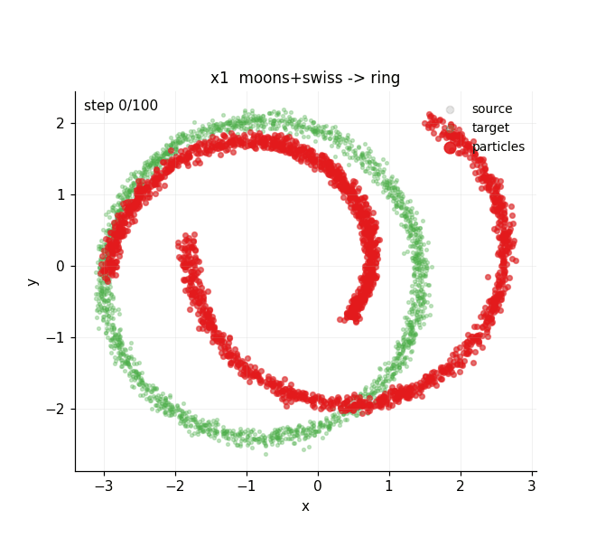
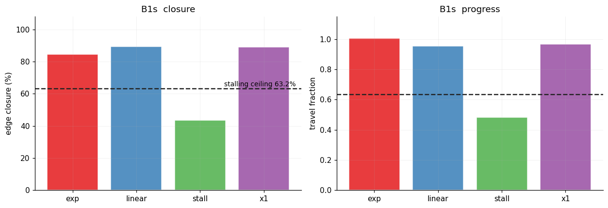
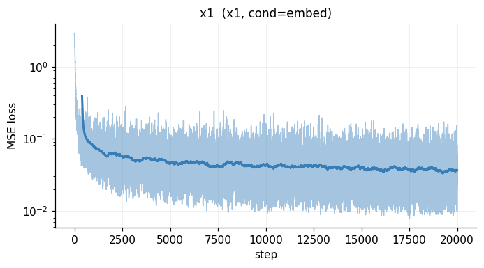
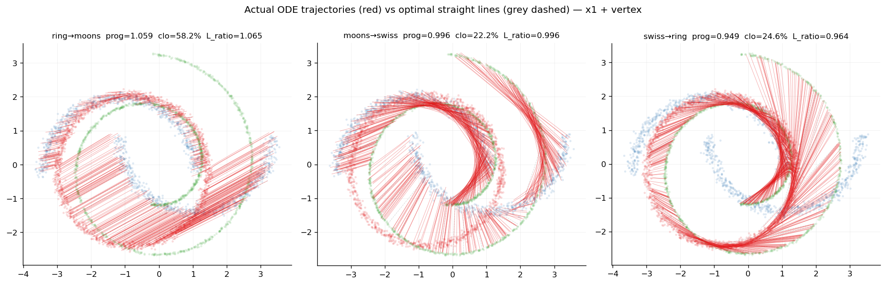
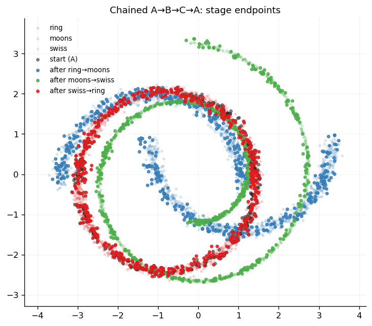
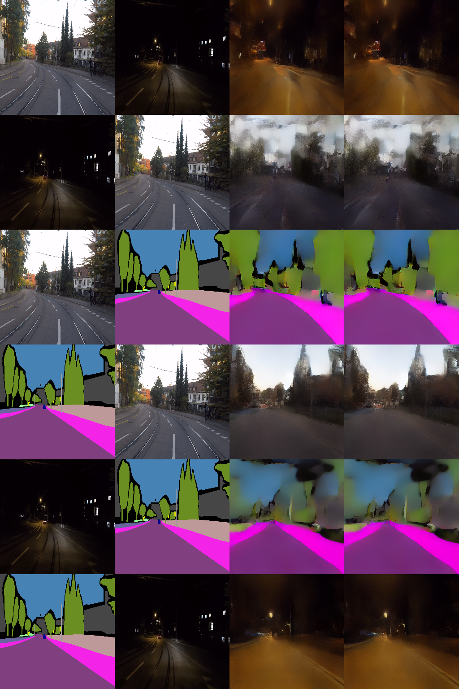

路径只有两个端点
条件概率路径 pt(x|z) 从 pinit 走到 δz，时间轴是一维的。整个数学框架从定义上就只描述「一个源 → 一个目标」。
Flow Matching 是 Flux、Seedance 等生成模型的数学内核，但它只在两个分布之间定义概率路径。我们把它推广到 K 个分布张成的单纯形上：同一个速度场，同时完成两两传输 A→B、合流 A+B→C、分流 A→B+C。
现有流匹配 / 扩散模型的概率路径只有两个端点。要覆盖 K 个分布之间的所有转换，需要 K(K−1) 个独立网络，而且 A+B→C 这类多分布运算在原理上就无法表达。
条件概率路径 pt(x|z) 从 pinit 走到 δz，时间轴是一维的。整个数学框架从定义上就只描述「一个源 → 一个目标」。
K 个模态互相生成需要 K(K−1) 条有向边。K=3 时是 6 个独立 FM；K=10 时是 90 个——参数、存储、调度全部二次增长。
两个模态共同决定第三个模态（A+B→C）、一个模态分裂为多个（A→B+C）：这类运算没有「边」可以承载，逐对 FM 无解。
生成 = 让分布随时间演化。Flow Matching 把它变成一个可监督的回归问题：在已知概率路径上，回归每个时刻的真实速度。
给定速度场，粒子沿确定性轨迹从噪声流到数据。
扩散模型属于这一支；朗之万动力学是其特例。
不需要显式求解边缘后验——条件目标即可采样。
把「端点标签」升级为单纯形坐标 c：K 个分布是 K 个顶点，内部点表示多分布联合状态。路径定义升维后，组合运算自然进入表达域。

沿一条棱的经典输运；c₀=eA，c₁=eB。
从两个实例的联合重心出发，生成目标分布中对应的实例。
从一个实例出发，输运到两个对齐目标实例的联合重心。
三种操作共用同一条坐标公式 ct = (1−t)c₀ + t·c₁——变的只是端点 c₀、c₁ 在单纯形中的位置。合流从两个分布的重心出发，分流指向两个目标的重心。
对直线路径求导得到一个关键恒等式：x1 目标 ≡ 真速度。再用 vertex 架构把对称性写进结构——对称性由构造保证，不靠网络去「学」。
ring / moons / swiss 三个分布由同一潜变量 u 参数化——每个样本都有真伙伴，因此我们能检验「实例级绑定」，而不只看边缘分布像不像。



x1 目标下真速度是常向量 ⟨c₁−c₀, Z⟩，理想模型一步即可到位。one-step 实验（ninteg=1）确认单步生成不退化：边缘形状、实例对应仍然成立。
配套消融：仅改参数化（stall / linear / x1 / exp），其余全部共享。stall 稳定压在 63.2% 天花板上，linear 与 x1 并列最优——参数化是决定性变量。


四个指标分层覆盖：分布到了吗（closure/SW2）→ 实例对上了吗（progress/d_true）→ 路径直不直（L_ratio）→ 循环记不记得（cycle）。
生成点向目标推进的比例。100%=完美到达；63.2% 是停滞场的签名。越大越好。
随机投影到一维后求平均 Wasserstein-2 距离，衡量边缘分布差异。越小越好。
生成点到真伙伴（同一潜变量 u 的对应实例）的平均距离，直接衡量实例级绑定。越小越好。
绕一圈回到出发分布后与自身比较，衡量循环一致性 / 记忆。越小越好。

| 模型 | 参数量 | closure | SW2 | progress | conj / disj |
|---|---|---|---|---|---|
| simplex-FM（x1 + vertex） | 269,062 | 88.85% | 0.0784 | 0.942 | ✔ 独占 |
| 独立脚本复现（x1 + vertex） | — | 89.74% | 0.0729 | 0.947 | ✔ 独占 |
| 6 × 独立 per-edge FM | 1,603,596 | 90.45% | 0.0665 | 0.957 | ✘ 原理上不可 |
循环实验给出最直观的一击：A→B→C→A 三轮输运后，终点分布与出发分布几乎重合（cycle ratio 0.046）——一个速度场在三个分布间往返而不「失忆」。

